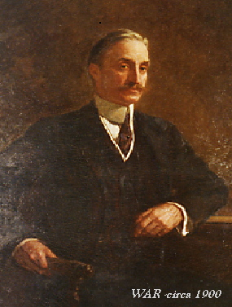

<div class="bg-grey">

  <div class="container py-5">

    <div class="row pt-5">
      <div class="col-md-12">
        <h2>About 3-Star Camp</h2>
      </div>
    </div>

    <div class="row pt-4">
      <div class="col-md-8">
        <p>3-Star Camp is located in the Adirondacks, in upstate New York, a 6-hour journey from New York City.</p>

        <p>William A. Read had Camp built in 1906. In July 2006, Approximately 35 family members gathered at Camp to celebrate 100 years of this wonderful retreat.</p>

        <p>Thanks to much tender loving care, the site has remained virtually unchanged.</p>

        <p>From the book <a href="https://www.amazon.com/Great-Camps-Adirondacks-Harvey-Kaiser/dp/0879233087/ref=sr_1_1?s=books&ie=UTF8&qid=1397177326&sr=1-1&keywords=great+camps+of+the+adirondacks" target="_blank">Great Camps of the Adirondacks</a>:</p>

        <iframe frameborder="0" scrolling="no" style="border: 0px; opacity: 1; visibility: visible;" src="https://books.google.com/books?id=5HsDGCaqMY0C&amp;lpg=PA189&amp;ots=87r3G0yCPG&amp;dq=read%20camp%20adirondacks&amp;pg=PA189&amp;output=embed" width="650" height="650"></iframe>

      </div>

      <div class="col-md-4">
        
      </div>
    </div>

  </div>
</div>
